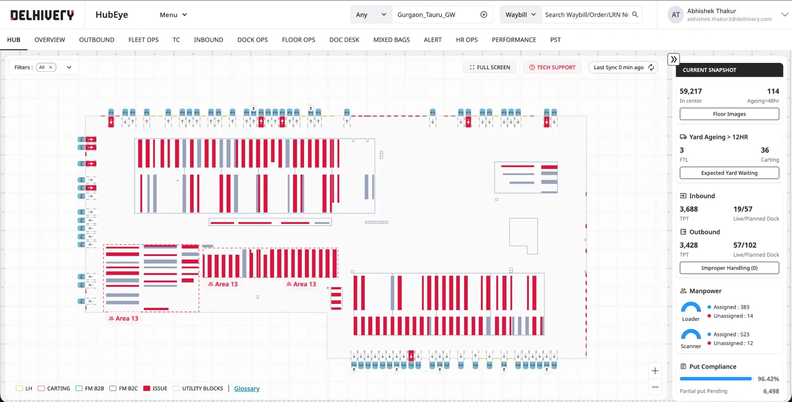
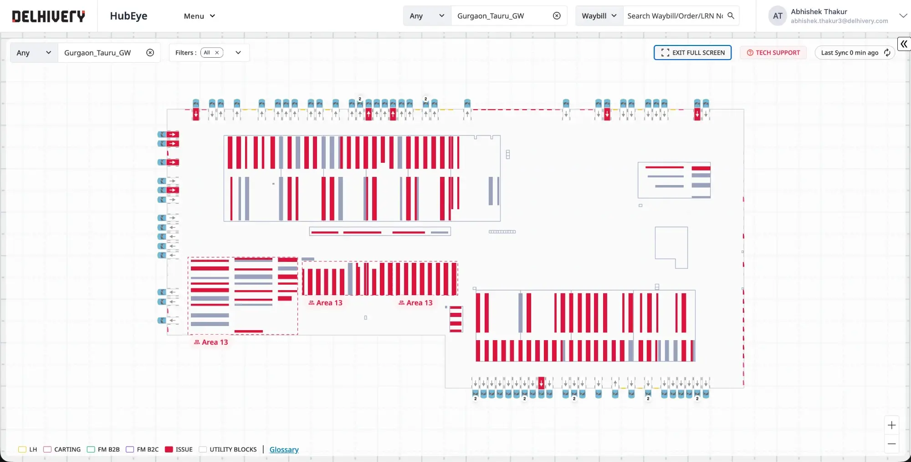
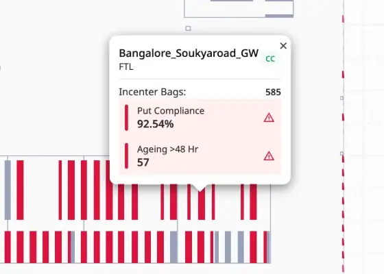
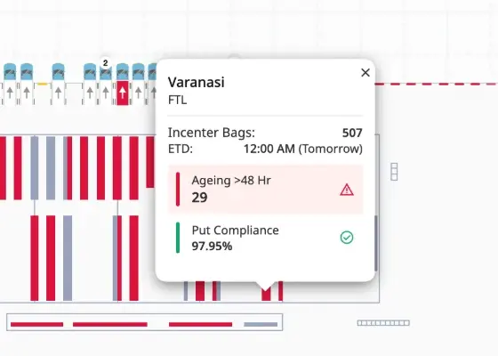
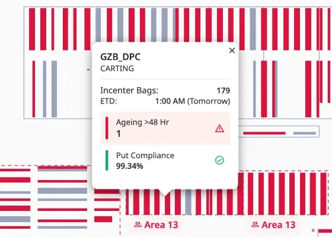
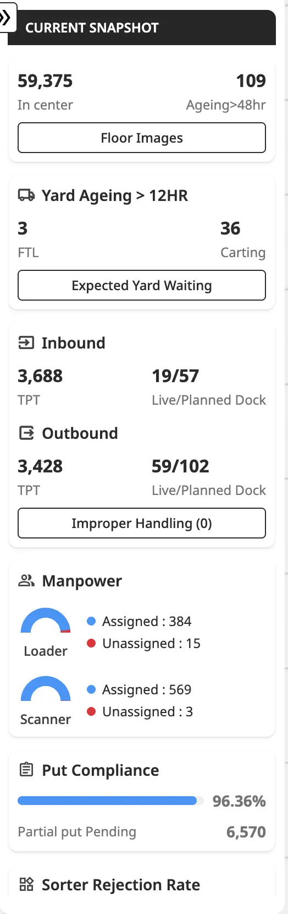
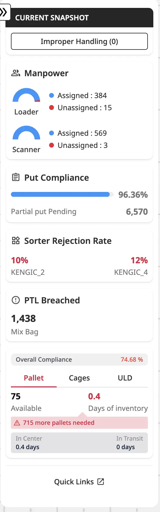
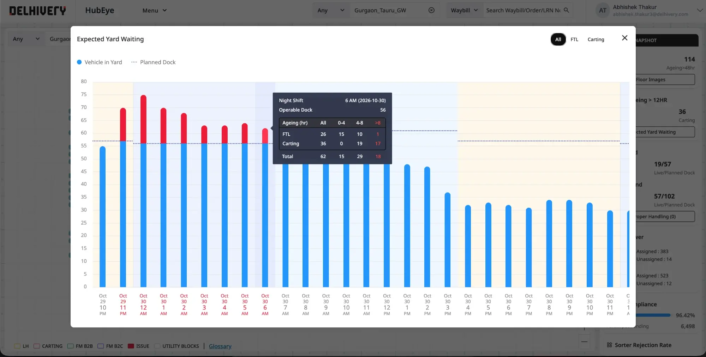
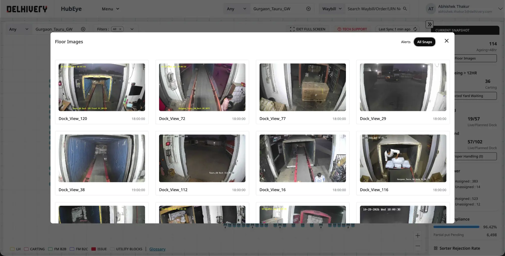

Supervisors could see every number but act on none of them. We mapped live operations onto the real hub floor, so problems show up where they happen and get fixed in the same shift.

HubEye is how Delhivery supervisors watch 140+ hubs and gateways, each moving lakhs of shipments a day.
Rich data in tiles and tables. To act, supervisors exported to Excel, losing 6+ hours a shift.
The real hub layout, 1:1, with grey for normal and red for act now. Click anything for the why.
Put compliance 72% → 79%, on-time departures 46% → 54%, shipment ageing down 8%.
Some facilities exceed 1.2 million square feet. Docks, inbound zones and staging sectors each need decisions in minutes, around the clock.
The old HubEye was a read-only wall of tiles and sector tables across 14 tabs. Rich in data, but entirely passive: no priority, no reason, no next step.
Counts without context. A supervisor saw "155 unassigned" but not where, or why.
Fleet, dock, floor, inbound and outbound lived in separate tabs, so no single view of the hub.
Sector health meant scanning long tables of bags, putaway and compliance by hand.
Export, clean in Excel, pivot, then spot the bottleneck: 6+ hours lost every shift.
We rebuilt HubEye as a digital twin of the physical facility. Every dock, sector and yard lane sits where it is on the floor, so a supervisor can look at the screen and walk straight to the issue.

Normal is grey, act now is red. A supervisor scanning 300+ sectors and docks finds every critical zone in seconds.
Docks around the edge, sectors in their rows, areas outlined. Location is the first piece of information.
The map, the reason and the hub's vitals live together, so nobody exports to Excel to decide.
Every element opens a small card: bags in the centre, ETD, and only the signals that matter. Red rows say what is wrong; green rows confirm what is fine.



A persistent snapshot panel sits beside the map: shipments in centre and ageing, yard waiting, inbound and outbound docks, manpower, put compliance, sorter rejection, PTL breaches and pallet stock.


Expected Yard Waiting forecasts vehicles in the yard against planned docks, hour by hour, with the overflow in red. Floor Images bring the real dock and floor cameras into the same tool, so a red dock can be checked in one click.


Measured across hubs after rollout. The Ionad hub saw the biggest drop in ageing.
I led design direction, critique and stakeholder alignment with hub operations. Ravinder Kumar was the Product Designer who designed and shipped the experience, working with product, engineering and hub operations.